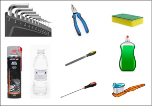
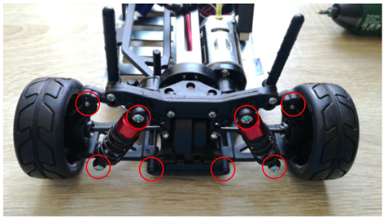
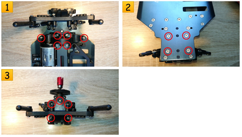
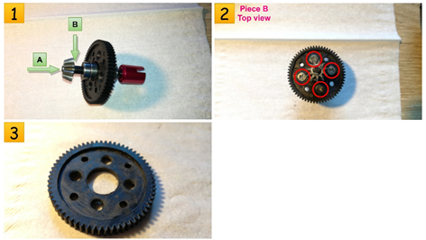
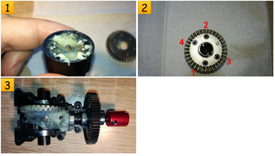
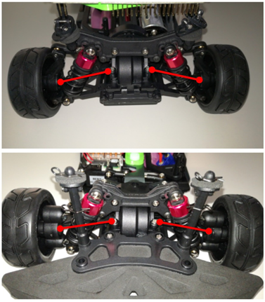
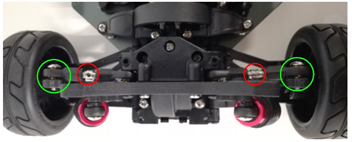

Hardware improvements
FAQ
WHY?
Let’s say you have just written a script that turns on a light bulb. At the first glance, there is no light coming out from the bulb. What are you going to do? Well, sometimes it’s better to check if the bulb is properly plugged in, rather than rewriting your code. Basically all you need to do is cleaning, lubricating and, where needed, removing some parts of the car.
What are the advantages?
- The advantages are:
Developing / improving mechanical skills;
Lower friction - involving lower current consumption;
Driving smoothness;
Low chance of getting the car stuck when cornering.
Can this part be skipped?
The given car kit has an already implemented PID control, which means driving in a “constant speed” mode, meaning that even if the car tends to get stuck (based on the signals received from the encoder) the car’s speed will be automatically adjusted and therefore the problem of the smoothness is eliminated (at least partially). The car, by default, runs in “constant power consumption” mode, where any friction or physical tension will result in decreasing the car’s speed or even in the situation of the car being stuck. Nevertheless, in both situations, a hardware care for the chassys is always welcomed :).
What tools do I need?

Imbus screwdriver;
Grease ;
Degreaser;
Isopropyl alcohol;
Sponge & brush;
Pliers;
Phillips screwdriver;
Flat file / dremel / sandpaper.
{kind=link}
How much time do I need?
Working time approximately 4 hours.
Let’s get this show on the road!
Removing the computer boards’ support
Disconnect all wires, remove the mounting support’s nut and then remove the safety clamps and case holders.

Removing the driving shafts
Unscrew the highlighted screws.
{kind=link}
Removing the differential
Unscrew the highlighted screws and after step no. 3 you will be able to see the cogwheels.
{kind=link}
Cleaning the cogwheels
Remove both pieces. From Piece A remove the bearing and afterwards remove the washer permanently.
Clean the grease from the differential’s case, cogwheels and bearings. Make sure you also use alcohol for degreasing the bearings until they freely spin.

Tighten the screws equally

Remove the safety washer (A) and then also remove the (B) washer permanently.
Remove the screws from the plastic cogwheel and then try sandpapering the surface where the flange will be attached (until it is perfectly flat).
{kind=link}
Mount them back

Grease all moving parts .
Tighten the screws equally (do not screw them too hard) in the specified order.
Try spinning the driving shaft and make sure that it does not have blocking points.
{kind=link}
The distance between cogwheels’ axis
- The cogwheels are not perfectly round, therefore at a complete spin of wheel A, the space between the two might vary. This can result in:
Losing grip;
Locking the wheels.
- What you should do:
Loosen up the C screw;
Let someone spin both front wheels in order to see if the wheels are still coupled together while you are adjusting the distance between the two.
- When do you know it’s done?
This step can be considered done when the wheels move smoothly for a total spin of A cogwheel, with the mention that the cogwheels should be permanently jointed (When tightening the C screw back the cogwheel may move, and so modify the distance between the axis and therefore it might need to be setup properly once again).

The abnormal free movement of the wheels
- It is true that the wheel may seem a little bit too loose but this is not a bad thing. You have to make a compromise:
A freer move results in loose parts.
Firm parts result in not such a free move.
Our suggestion is to put a very thin (how thin, it depends on the gap between bearing and safety cylinder) washer between the bearing and driving shaft joint. You should compare a wheel that doesn’t have a washer with the one you just mounted and see if it is ok for you.

Always be sure that the driving shafts are moving freely
The highlighted parts are the driving shafts. They should always freely move regardless of the wheels’ position and car’s distance to the ground.
{kind=link}
- In order to let the driving shaft move freely, you need to increase the gap between the wheel and the differential:
Take the suited imbus screwdriver and unscrew both the upper and lower screws a little bit.
Repeat the previous step until your driving shaft moves freely in any situation

Frontal differential and steering
The front axis differential also needs the same treatment as the rear one. Also, the servo needs one more screw in order to ensure that the sttering column never jumps out. The position is hard to reach when the car is fully assembled. We suggest that, when working on the frontal differential, to also fix the servo’s couple. Please make sure that both Nucleo and servo are properly powered on when doing so, this way, the servo will be set to the 0 position. Afterwards, check that the wheels are in the neutral position. Then, you can safely tight the couple.

Setting the wheels’ Camber
What is the wheel’s Camber?
The Camber is the angle at which the wheel and tire stand relative to a perfectly flat surface and it can be positive or negative. A positive Camber means that the top of the wheel is pointed outwards, whereas negative Camber means the opposite, the top of the tire is leaned in closer to the car. Each of those two types of Camber have theirs advantages, but we suggest you approach a negative Camber.
What are the advantages of negative Camber?
Improved handling of the vehicle;
Reduced wheel vibration when turning;
Possibility of cornering with higher speed;
Steering reacts more directly;
Steering forces are reduced;
How to set front axle Camber?
There are two ball-head screws (red circled). In order to set the front axle Camber you have to twist them using a 2.5 mm hexagon wrench that is inserted through the wheel’s rim. Unscrew the upper screw more than the lower one. Try as much as you can to set the Camber similar both left and right sides. If you unmount the wheel, you will see a plastic grub screw as in (green circled) that can be tighten with a 5 mm hexagon wrench. That only serve for fastening the axis stub to the ball-head screws (red circled). We suggest you check that both ball-head screw can move freely before you reattach the wheel. Always check for the suspension also to move freely after setting the Camber.

How to set rear axel Camber?
In order to set the Camber, you will need to turn the red circled screws so that the distance between the chassis and the top part of the wheels modify. The part doesn’t have to be disassembled in order to be modified, but of course you can remove and measure it with a caliper rule. Another way of modifying the rear axle Camber would be to change the mounting position of the traverse link into the rear axle leg (which has available three different mounting holes – the green circled parts).
{kind=link}
Setting the wheels’ alignment?
What is wheel alignment?
Wheel alignment describes the relation of the wheel level to the driving direction. It is usually known as “toe-in” or “toe-out” where the toe measurement is the distance between the front of the tires and the back of the tires. Toe-in should be used because it improves lateral cornering of the tyres and it also leads to a more direct response to steerig.
Setting front axle alignment
The alignment on the front axle can be set by turning the track rod levers ( red circled). You do not have to dismantle them in order to do the adjustments, because they have threads in opposite. It is important that you set them equally (test after each modification that the car is moving straight).

Adjust the car’s height
You have six possible combinations for the suspensions. We suggest you setup your ground clearance high enough to avoid any problems that can appear when driving on the ramp. You can see that there are two screws used as spacers (the light blue squares). Even if you setup you suspensions for a big ground clearance, it is possible that these spacers won’t let the lower control arm go as low as possible. So, you just have to unscrew the light blue highlighted screws (both front axle and rear axle).